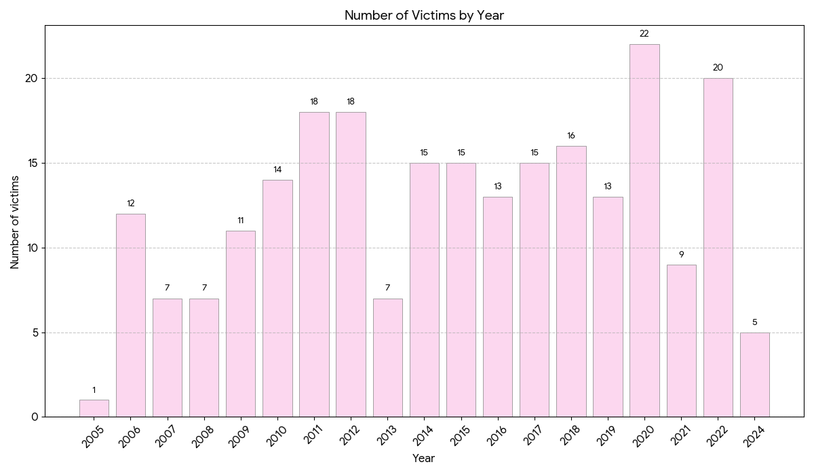
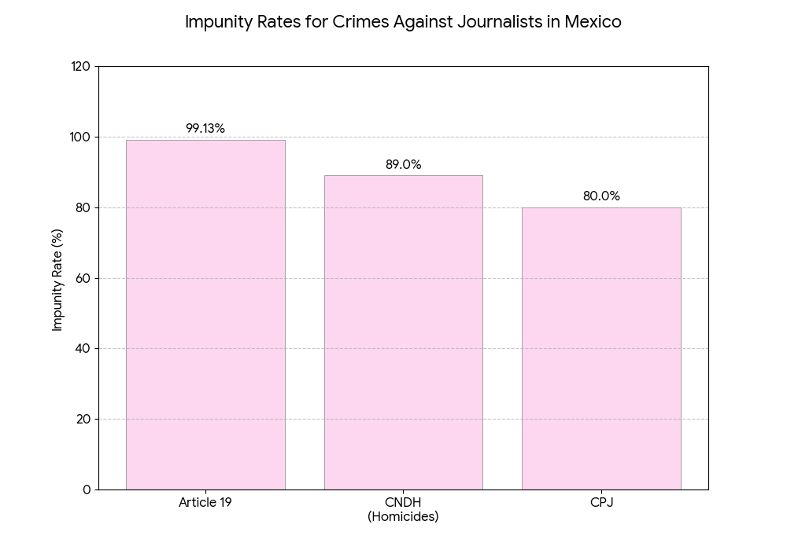

Deaths Over Time

The data shows an escalation in violence against journalists, activists, and political figures since 2006. Sources say this corresponds with Mexico's intensifying drug war and increasing political polarization. The years 2020 and 2022 represent the deadliest period on record. It is important to note that many different sources have varying numbers as a result of categorical differences.
Geographic Distribution & Impunity

Violence concentrates heavily in states with significant organized crime activity and political corruption. Veracruz, Guerrero, and Tamaulipas account for 40% of all documented cases, while Mexico City represents the highest risk for journalists specifically because of political pressure.